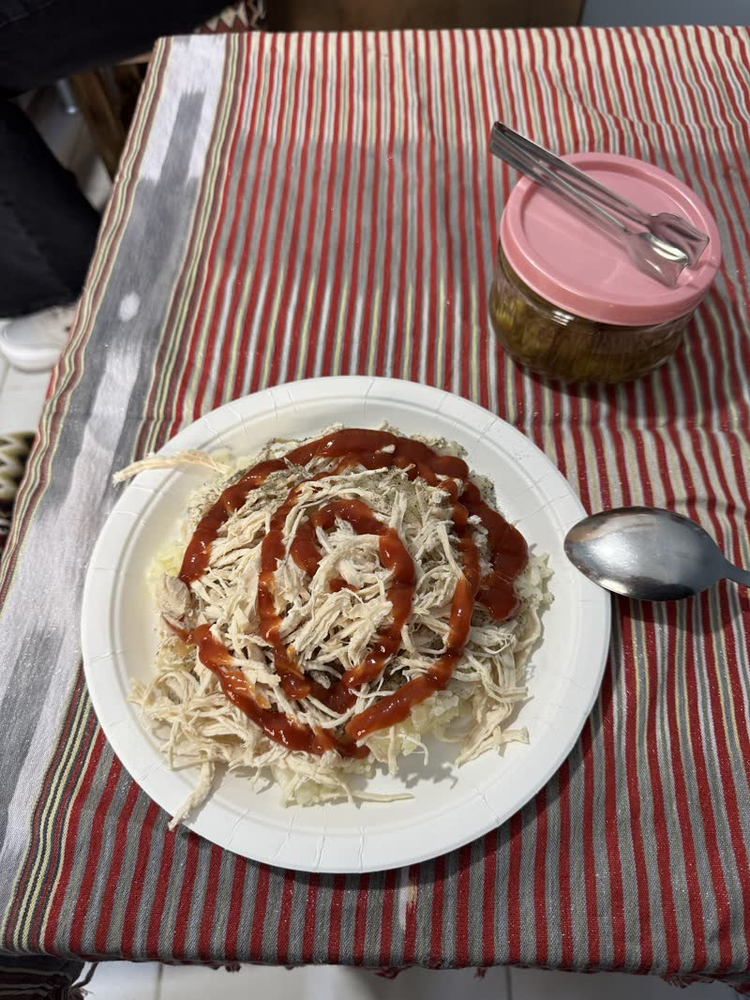
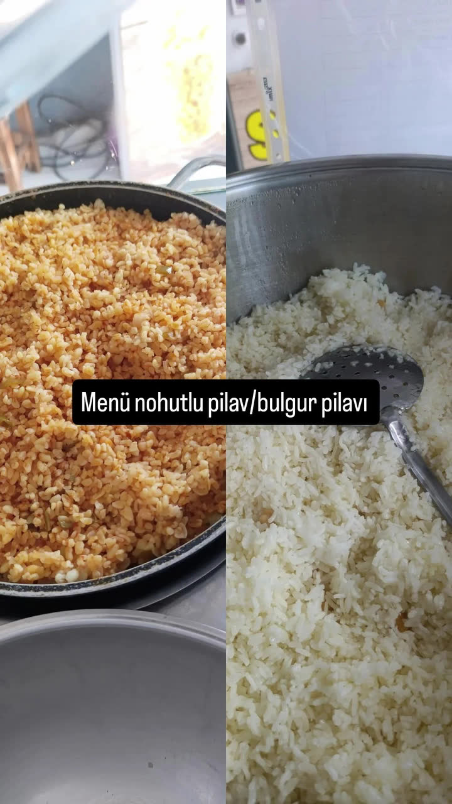
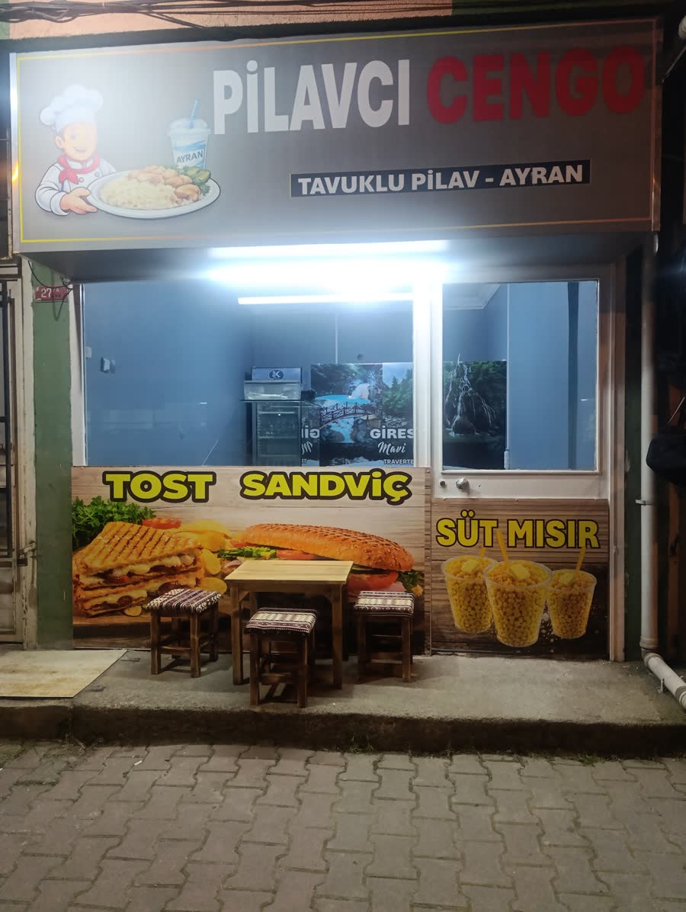

5,0 Google · 35 yorum · Orhanlı, Tuzla
Pilav tane tane. Tavuk bol. Gerisi hikâye.
Tuzla Orhanlı'nın pilavcısı. Kazan sabah kaynar, kepçe gece 23:30'a kadar durmaz.
Lezzetin Adı! — menüde de böyle yazar.

Neden Cengo?
-
Tane tane pilav
Kazandan kepçeye, kepçeden tabağa. Lapa nedir bilmeyiz.
-
Tavuk bol
Didik didik, pilavın üstü görünmeyecek kadar.
-
Doyurucu porsiyon
Az gelirse söyle; ama gelmez. 1,5 porsiyon da var.
-
Tertemiz mutfak
Gelenler yazmış: "Tertemiz mükemmel bir işletme."
-
Gece açık
Mesai bitti, kazan bitmedi. 23:30'a kadar buradayız.
-
Sipariş hattı
Telefonla söyle, gelince hazır olsun: 0531 957 53 40.
Kepçeden kısmıyoruz.
Cengo, yani Cengiz usta. Sabah kazan kaynar, pirinç dinlenir, tavuk didiklenir. Akşam olur, kazanın dibi görünür — ertesi sabah kazan yeniden kurulur.
Porsiyonu tartıyla değil, gönülle ayarlarız. Kalkarken doymadıysan, o gün ilk kez olmuştur.

Biz anlatmayalım.
Gelenler anlatsın.
Google'da 35 yorum, ortalama 5,0. Üçünü buraya aldık, gerisi orada.
"Kartal'dan kalkıp geldim, iyi ki gelmişim dedim. Pilav tane tane, tavuk bol, lezzet tam yerinde. Gece açık olması da büyük avantaj. Bu civarda pilav yiyecekseniz başka yere bakmaya gerek yok."
"Tertemiz mükemmel bir işletme, misafirperverlikleri ve güler yüzlü olmaları işletmeye ve yemeklerine renk katmış. Aynı anne yemekleri gibi, ellerinize sağlık. Tekrar geleceğiz."
"Süper lezzet, servis hızlı. Herkese tavsiye ederim."
Adres belli.
Mescit Mah., Turgut Özal Cd. No: 27
Orhanlı / Tuzla, İstanbul 34956
| Pazartesi | 09:00 – 23:00 |
|---|---|
| Salı | 10:00 – 23:30 |
| Çarşamba – Cumartesi | 09:00 – 23:30 |
| Pazar | Kapalı |

Gece acıkınca adres belli.
Pazar hariç her gece geç saate kadar kepçe sallanıyor. Telefon yeter.